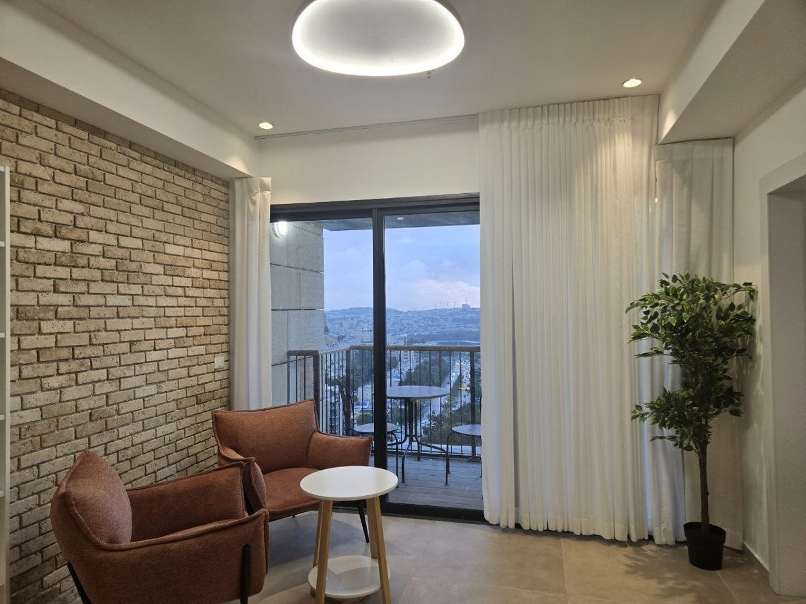

בני 60 ומעלה: לעבור בלי למהר למכור
מי שגרים בדירה גדולה אחרי שהילדים כבר עזבו מתלבטים לא פעם אם לעבור לדיור מוגן, וההחלטה נדחית לפעמים רק בגלל סדר הפעולות: קודם צריך למכור, ורק אחר כך אפשר לקנות. המודל של הוד דניה הופך את הסדר הזה.
נכנסים לדירה מוכנה עם מרפסת וממ"ד ומשכירים את הדירה הקודמת. שכר הדירה יכול לעזור בהחזרים החודשיים עד שהדירה נמכרת, ואת המכירה עצמה עושים בלי לחץ של זמן.